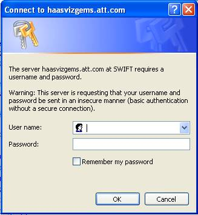
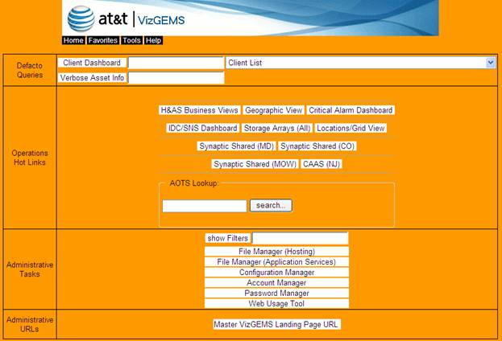

Visualizer is accessed via the AT&T Intranet. A login is required to access any aspect of the Visualizer. Contact your OPS Administer for access and login credentials.
Once you have received your login and password, click on the following link:Direct access:
http://haasvizgems.att.com/cgi-bin-vg-members/vg_home.cgi

Figure 2-1 Direct Access Login Page
Single Sign-On:
This feature is currently under development.
Proxy Server Access:
http://attvizgems.att.com/cgi-bin-vg-members/vg_home.cgi
To access these web servers from the above Proxy Server VIP, operations personnel will need to use the shared user account ‘attops’.
Once you have successfully logged in, the OPS main landing page will display. The content of the landing page varies based on account settings.
NOTE:
The following screen is an example of what your landing page may show.

Figure 2-2 Visualizer Landing Page
The following sections describe in more detail some of the options you may see on the Visualizer Landing page as show in the figure above.
Menu Bar -  is displayed
on every page.
is displayed
on every page.